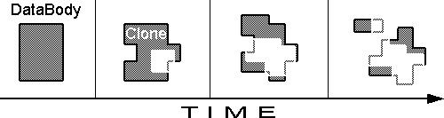

| Cloning the Databody TraceNoizer finds data on the Internet that is connected to a particular name, nickname and/or email address and continuously merges that data into a potentially infinite number of minimally differing clones which manifest in the form of homepages. These homepages are automatically uploaded on servers offering free webspace and are therefore publicly accessible to surfers and search-engine indexing-robots. Processing the Clone The first search and analysis that TraceNoizer performs on a name yields a certain number of keywords. For each keyword (we will now call them "theme") an HTML-site is automatically generated and linked to all the other theme-pages which all contain text and images. Additionally, TraceNoizer produces an index.html containing a welcome phrase and the site structure.The TraceNoizer -system then periodically starts new queries with the themes of the last search as searchterms, evaluates new themes out of the search result and again publishes them as a new clone-page. The thus created clones bear different stages of resemblance to their original, the more are created the less likeness they bear to the original databody. The url of each clone-page is also automatically submitted to search-engines.This initiates the constant processing and reprocessing of the clone-pages. The search-engines also refer people searching for an email, name or nickname to those pages, where the really relevant data is extremely hard to pinpoint among and within all the redundancies that were created. With this cloning procedure, the Databody is being developed and influenced in the following way: 1.
1. The DataBody is slowly adulterated with disinformation which is thematically related to each other. If TraceNoizer would handle the procedure differently, the result could turn out as follows: 2.
 3.  2. Randomized information are published. The "real" Databody is still comprehensible, because the created false information is not well directed. 3. Most of the clones are published at once. The disinformation could mislead new searchers, if they don't notice the date, but would not trick those, who observe the development. It is necessary to emphasize, that the TraceNoizer-system is a sophisticated and fully automated search-, analysis- and publication tool, and that it produces homepages that come very close to personal homepages produced by humans, of which there are a lot on the internet. It is TraceNoizer's aim not fill free servers with trash but to confuse and mislead in an intelligent way. |